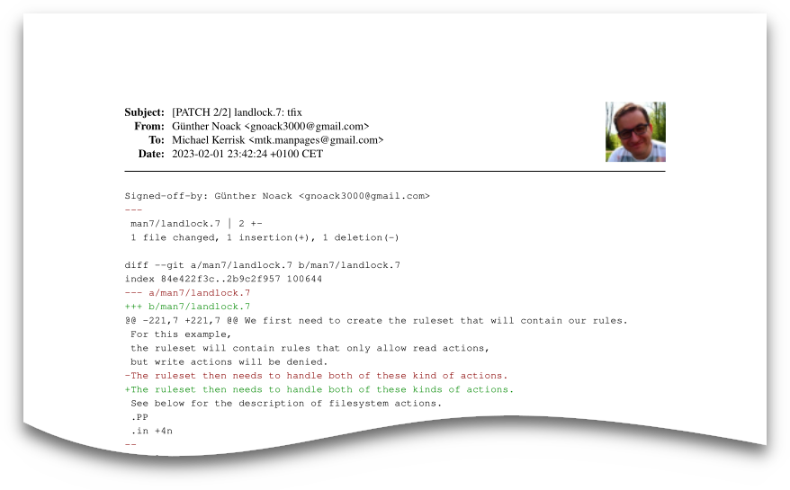

Do your eyes hurt from staring at the Cathode Ray Tube? Do you prefer to have a stack of paper instead of a terminal on your desk?
UNIX™ wizards across the globe are making the switch.
Now you can print your electronic mail
with unparalleled visual fidelity!
Whether you are printing out mission-critical software patches
or standard electronic correspondence,
Mailprint Deluxe is the ultimate power-user utility
for bringing your inbox to the physical world.
Mailprint is a classic UNIX™ tool that strictly adheres to the renowned UNIX™ pipe-and-filters architecture. Email goes in, georgeous PDFs come out.
Mailprint is a drop-in replacement for muttprint.
Why bog down your hard drive with a bloated 250MB+ TeX Live distribution? Mailprint is a highly engineered, self-contained binary under 5MiB! It is the ultimate drop-in replacement for muttprint.
Want to see the faces of your colleagues on your printouts? Mailprint integrates with state-of-the-art profile picture sources – like picon – to display sender pictures right on the page!
Mailprint Deluxe is Free Software.
Mailprint is well suited for git patches and electronic mail in text format:

To install the mailprint command line tool to $HOME/go/bin, run:
go install github.com/gnoack/mailprint/...@latest
Hook up mailprint with Mutt with the following Mutt configuration entry in .muttrc:
set print_command="mailprint | lpr"
The only runtime dependency is Fontconfig for font lookup, as well as suitable fonts for rendering.
Mailprint Deluxe: Because the Office of the Future runs on Paper